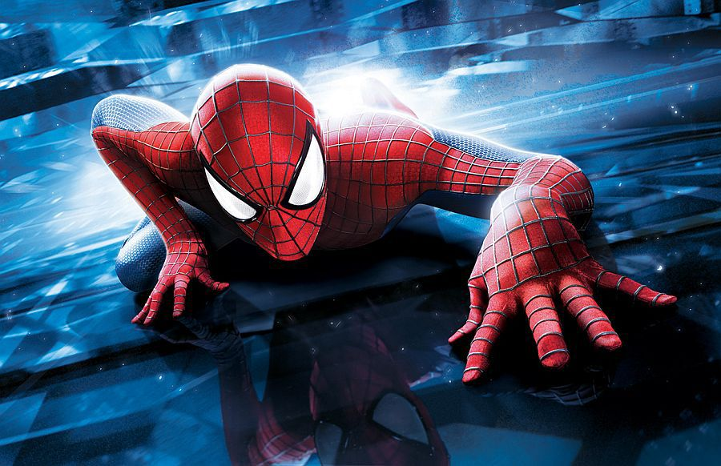
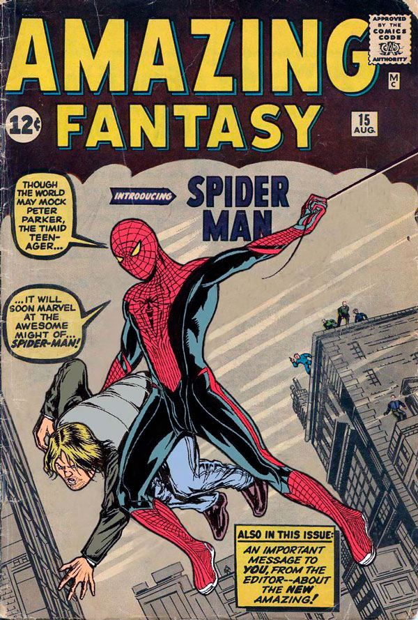
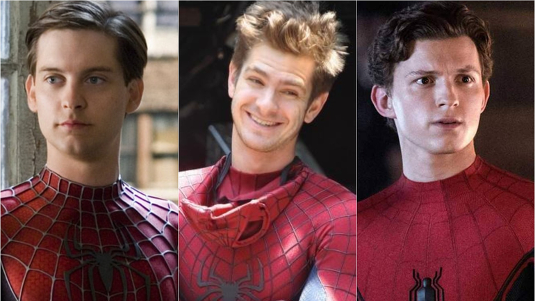

Пітер Паркер представлений дуже розумним та здібним підлітком, що живе у Квінзі, Нью-Йорк.[17] Він весь час запізнюється і йому не таланить, але він розуміється на хімії та фізиці. Його не дуже люблять інші підлітки, не поважають та ображають. Пітер жив з тіткою Мей й дядьком Беном. Одного разу Дядько Бен сказав Пітеру, що велика сила потребує великої відповідальності. На демонстрації Паркера вкусив радіоактивний павук, і у нього з'явились павучі здібності, серед яких вміння повзати по стінах, випускати павутиння (спочатку для цього він використовував механічні прилади з густою пастою), вміння відчувати небезпеку (павуче чуття), здатність бачити в темряві та без окулярів (до цього він був короткозорим), велика сила, швидкість, гнучкість, витривалість та спритність, до того ж він міг тепер швидко заживлювати рани, потім у нього з'явились отруйні жала.[18] Після закінчення реслінг-шоу, на якому він виступав, Пітер не захотів спинити злочинця, який потім вбив його дядька. Після цього Паркер вирішив боротися зі злочинністю.


Всупереч типовому супергеройському образу, Людина-павук містить «великі дози мильної опери та елементи мелодрами». Купперберг вважає, що Лі та Дітко створили щось нове у світі коміксів: «супергероя з недоліками та щоденними проблемами». Ця ідея породила «революцію коміксів».[55] Невпевненість та тривога в коміксах Marvel початку 1960-х років започаткували новий тип супергероїв, які сильно відрізнялися від впевнених та всемогутніх супергероїв, і змінили сприйняття їх громадськістю. Після того, як у коміксах була зображена справжня адреса у Нью-Йорку та зазначена як резиденція Мей Паркер, її мешканці отримували багато листів від дітей до супергероя.[56]

- Трилогія Сема Реймі:
- Людина-павук
- Людина-павук 2
- Людина-павук 3
- Дилогія Марка Вебба :
- Нова Людина-павук
- Нова Людина-павук 2. Висока напруга
-
Кіновсесвіт Marvel:
- Людина-павук: Повернення додому
- Людина-павук: Далеко від дому
- Людина-павук: Додому шляху нема
- Анімаційні фільми:
- Людина-павук: Навколо всесвіту
- Людина-павук: Крізь Всесвіт